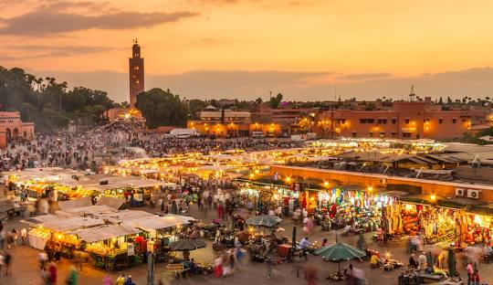
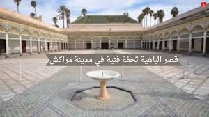

معنا اسم مراكش الدولي وتاريخه العريق
ربية : مُراكش , murrākuš ؛ بالبربرية : ⵎⵕⵕⴰⴽⵛ , Meṛṛakc ) هي مدينة تقع في وسط المغرب عند سفح جبال الأطلس . يطلق عليها لقب " المدينة الحمراء " رقم 1 أو " المدينة الصفراء " نسبة إلى اللون الأحمر الذي يغلب على جزء كبير من مبانيها ومنازلها 6 .
في عام 2020، بلغ عدد سكان مراكش ومنطقتها الحضرية ما يزيد قليلاً عن مليون نسمة . من حيث عدد السكان، تعد المدينة ثالث أكبر مدينة في البلاد، على قدم المساواة مع منافستها التاريخية مدينة فاس ، بعد الدار البيضاء والرباط .
كانت مراكش ، وهي مدينة إمبراطورية مثل مكناس وفاس والرباط ، عاصمة المغرب لمدة 350 عامًا تقريبًا ، في عهد المرابطين ( القرنين الحادي عشر والثاني عشر )، والموحدين ( القرنين الثاني عشر والثالث عشر )، والسعديين ( القرنين السادس عشر والسابع عشر ) ، وكذلك في عهد محمد بن عبد الله من سلالة العلويين الحالية (حكم من 1757 إلى 1790 ) .
تضم مراكش مدينة قديمة واسعة تبلغ مساحتها 600 هكتار ، وهي الأكثر اكتظاظًا بالسكان في شمال إفريقيا ، والتي صنفتها اليونسكو كموقع للتراث العالمي . بفضل حيوية مدينتها القديمة التي يعود تاريخها إلى 900 عام، والبنية التحتية للفنادق ذات المستوى العالمي، ومناخها المشمس، أثبتت مراكش نفسها كعاصمة بلا منازع للسياحة في المغرب . وتخدم المدينة ثاني أكثر المطارات ازدحامًا في البلاد، مطار مراكش المنارة الدولي ، وقد استقبلت المدينة ما يقرب من ثلاثة ملايين زائر في عام 2019.
أشهر الأماكن السياحية
جامع الفنا

ساحة جامع الفنا هي القلب النابض لمراكش، حيث تجد العروض الفنية، الأسواق، والمطاعم التقليدية.
حدائق ماجوريل

حديقة خلابة أنشأها الرسام الفرنسي جاك ماجوريل، وتتميز بألوانها الزاهية والنباتات النادرة.
قصر الباهية

قصر تاريخي يعكس روعة الهندسة المعمارية المغربية التقليدية، مع ساحات واسعة وزخارف رائعة.